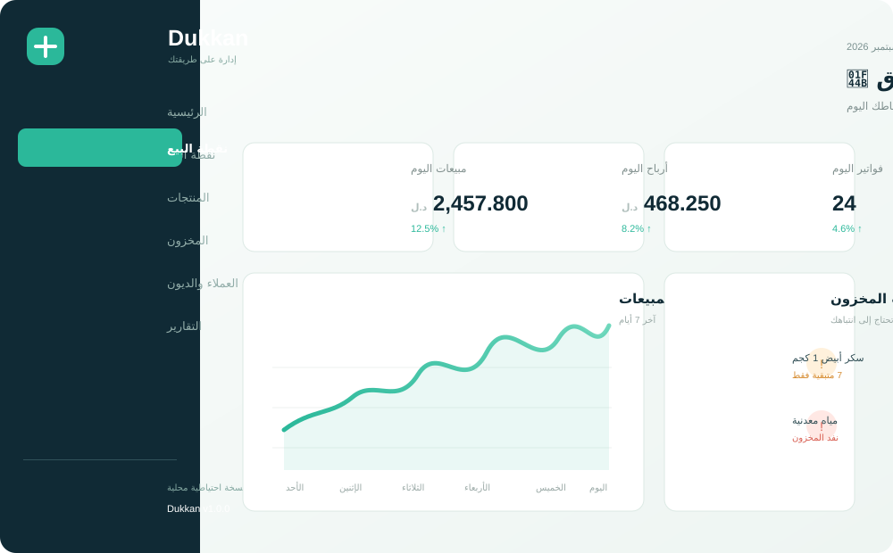
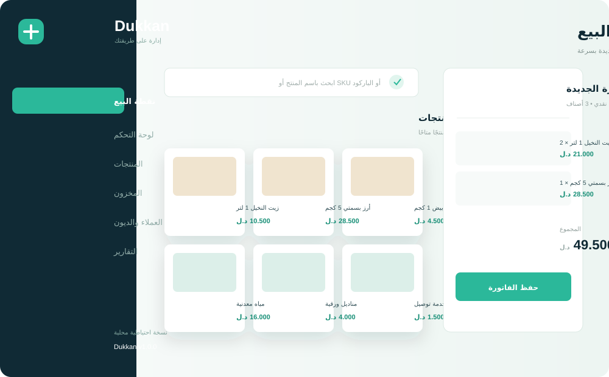

نقطة بيع سريعة
ابحث بالاسم أو SKU أو الباركود، اختر الدفع، وأنهِ الفاتورة في ثوانٍ.
اعرف المزيد ←Dukkan يجمع المبيعات والمخزون والعملاء والتقارير في تطبيق مكتبي عربي واحد. بياناتك معك، حتى عندما لا يكون الإنترنت معك.

Dukkan ليس لوحة أرقام معقدة. هو مساحة عمل عملية تفهمها من أول استخدام.
ابحث بالاسم أو SKU أو الباركود، اختر الدفع، وأنهِ الفاتورة في ثوانٍ.
اعرف المزيد ←تابع الكميات، واعرف الأصناف المنخفضة قبل أن تنفد.
حسابات بالدينار الليبي بثلاث خانات عشرية دون تقريب مزعج.
كشوف حساب واضحة ومتابعة سهلة لكل عميل ومورد.

لا تحتاج إلى دورة تدريبية طويلة. أعد نشاطك، أضف منتجاتك، وابدأ البيع.
اقرأ دليل المشروع ↗نتحقق من توفر Windows Installer الرسمي مباشرة من GitHub.
دليل استخدام عربي داخل التطبيق، يعمل بدون اتصال. النسخ الاحتياطي والاسترجاع متاحان من الإعدادات.
Dukkan مشروع مفتوح المصدر من إعداد وتطوير طارق العمامي — Tarek Elomami. هدفه أن يجعل إدارة النشاط اليومي أبسط وأقرب.
المستودع الرسمي ↗